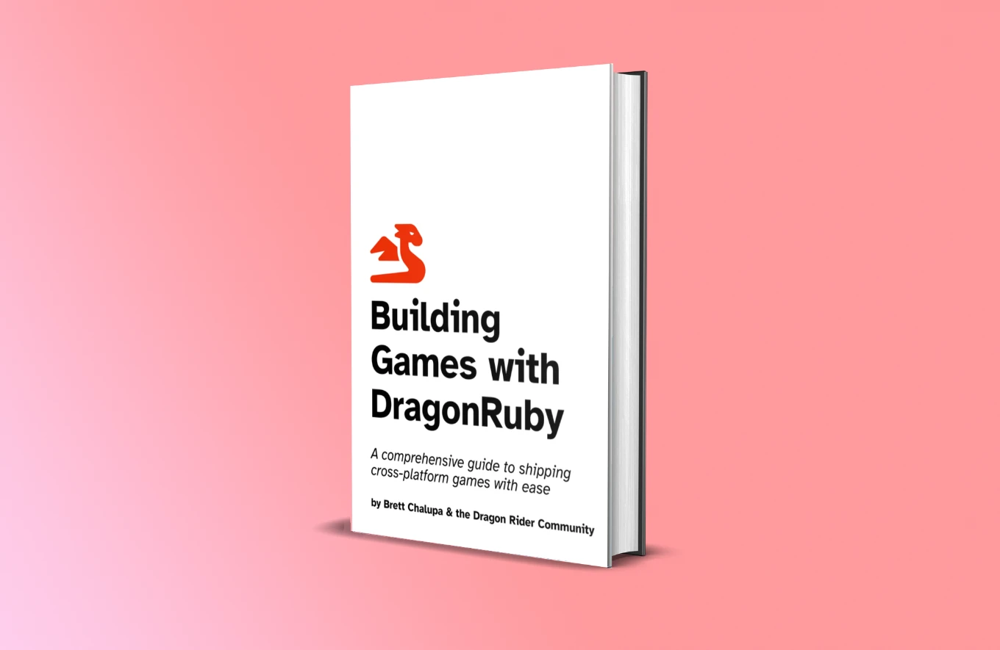
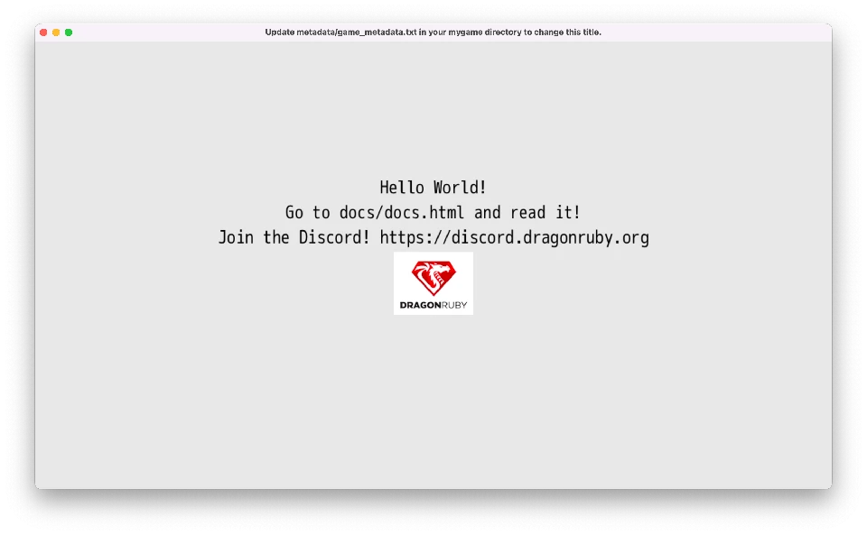
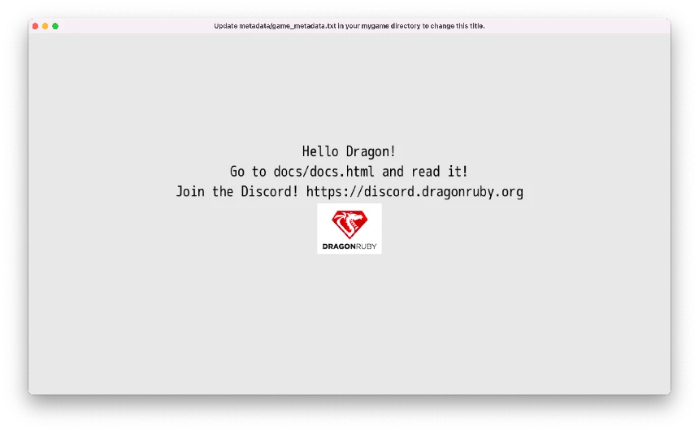
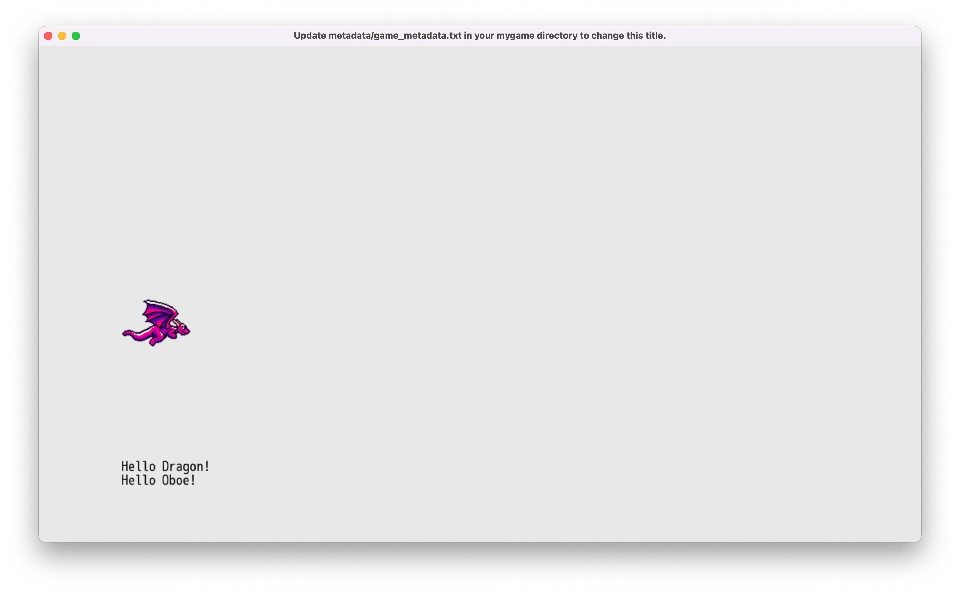

Introduction

🚧 Building Games with DragonRuby is a work in progress. 🚧
This book is aimed at new game developers who are interested in learning to code and build games. If you've written code before, especially Ruby, then you'll have a bit of a headstart. But the concepts in this book are beginner friendly. Whether you're new to game dev or just DragonRuby Game Toolkit, you'll have made a finished game by the end of this.
You need no prior experience with programming or game making to follow this book.
Why Learn How to Make Games
Making games is a total blast. It's challenging but rewarding. They're the sum total of so many creative mediums, plus their interactive. You'll learn so many different skills by making games:
- Programming and logic
- Rendering images
- Responding to input
- Game design
- Interactive design
- Working with image files
- Editing audio files
- Distributing the game software to users
- Getting feedback from your game and iterating
About DragonRuby Game Toolkit
DragonRuby Game Toolkit (DRGTK) is a cross-platform game engine for building 2D games. It lets you write games in Ruby, a wonderfully expressive and approachable language. It allows game developers to quickly iterate on their games and ship them to any modern platform.
DRGTK is not a no-code engine. You'll write the code that your game runs. This may seem scary at first, but it's a lot of fun and really powerful. Making games is also a great way to learn how to code! Don't know Ruby? That's okay, this book will teach you what you need to know.
But it isn't free!
DRGTK costs money, yes. And there are plenty of free game engines out there. But the DRGTK team is committed to sustainably working on the engine and making it the best it can be, which means they need to get paid for their work. Support small teams by buying their software, it shows you're interested and it helps them keep doing what they love.
You're investing in the engine and ecosystem, quite literally, by buying DRGTK. I want to see it succeed, so I bought a license. I want to see it succeed so badly I've written this book to try to help you make games with it.
Plus, if you're a student or in need of financial assistance, the DragonRuby team offers free licenses. Get in touch with the team to get a free license.
Why DragonRuby Toolkit
There are more game engines, frameworks, and libraries than I can count on my hands and toes. So why should you use DragonRuby?
That's a legit question. Here are my reasons why:
- It's focused on 2D games, so there's no competing interests in how the tooling works. It means what you need to know is pretty simple and easy to remember.
- It allows building games for all modern platforms, from desktop computers to the web to mobile devices to consoles. It's truly cross-platform and just works, which is amazing.
- It's fast a heck, which is important for making quality games.
- It makes use of Ruby, which is a wonderfully productive programming language.
- It doesn't force you to use a specific editor or tooling.
- It's lightweight to run the engine, which is great. Everything runs fast.
- It has live-reload and no compile times, which means when you change your game code, it automatically refreshes in the running engine. This is honestly so amazing, that you wouldn't know it unless you've used other game engines that require you to start a new build with each change.
I'm going to be honest, DRGTK might not be for you. If you want to make 3D games, look elsewhere. Although, if you're new to game development, I wouldn't recommend starting with a 3D game. If you're absolutely not willing to try coding, look elsewhere.
But for everyone else, I think DRGTK will knock your socks off (or at least shift them down a little).
Mindset
When learning something new, especially something that's challenging, it's important to have the right mindset.
- Be curious: it's the best way to learn!
- Be patient: learning is difficult, but stick with it
- Be kind: to yourself and others
When we learn how to play a new instrument, we learn the basics by covering simplistic pieces of music. Similarly, we're going to "cover" simpler game mechanics to get you started. Before long, you'll grasp the basics and be able to move onto more complex games and mechanics.
Start by making small games that you can finish in a couple of days. Make a lot of small games to learn quickly. Don't get too wrapped up in your dream idea or making something that gets on Steam. Definitely don't try to make an MMORPG. Instead, focus on shipping your small games.
What's shipping? Isn't that when you want Mulder and Scully to kiss? No! Get your head out of the gutter you alien-loving freak. (I want to believe! 🛸) Shipping is when you 1. finish your game and 2. release it for people to play it.
So here's your mindset, really, boiled down: make a small game and ship it for free, then make another small game and ship it for free. Before long, you'll be building a visual novel where Mulder and Scully kiss and be swimming in a pool of cryptocoins! But seriously, what that mindset will do is help you grow as a developer, build an audience, and get your shipping muscle primed and ready for making a better game with each one.
What We'll Be Making
Throughout the book, we'll be building a simple shoot-'em-up where you pilot a dragon. You'll learn all of the foundation aspects of making a game:
- The game loop
- Rendering text
- Rendering sprites and animating them
- Handling input
- Enemies and AI
- Playing sound effects and music
- Polishing your game
- Shipping it!
TODO: playable demo link
Hold the Gosh Dang Phone
"Who the heck are you?" you might be shouting at your screen. Little ole me? I'm just the voice of the dragon that lives within all beings! No, no, I kid. I'm Brett! I'm a programmer who enjoys making games and sharing what I've learned along the way.

That's-a-me! If I was a bunch of pixels I guess.
I love Ruby. I've been writing it for over 12 years, and it's such a joy. I also love games. Particularly 2D games. So here we are. ❤️💎 + 🎮 = 📕 How's that for an equation?!
I don't know, you want me to be serious about why you should listen to me? Oh you skipped this section, okay fine. Wow, did you drop that banana peel there? You trying to take me out already? This early in the book? Well, I'll see you in the next chapter! We'll see who gets the last laugh.
Get Started
All right, are you ready to make a game? Let's get started!
Hello Dragon!
We'll start by rendering an image and some simple text on the screen. But first, we need to get our computer and DragonRuby Game Toolkit ready for developing.
First Steps
- Download a code editor: Since you'll be coding your game, you need a special text editor to let you write the code without any extra formatting that text editors like Microsoft Word add. Visual Studio Code is a great free editor. Download and install it. (Or use your own favorite editor.)
- Get DragonRuby GTK: You need to get a copy of DragonRuby GTK so you can use the engine. Buy it on Itch and download the zip file for your operating system.
- Extract the DRGTK engine zip: In your computer's file explorer, extract the engine zip file.
You're ready to work on your game. Let's get to it!
ProTip: don't delete the zip file! You can unzip it again for when you start working on your next game. It's helpful to keep it around.
What's in the Engine Zip
When you download DragonRuby Game Toolkit, it contains everything you need to build your game. There's no external dependencies to install or monkey with. You just use the provided files and start making your game.
Let's go over the key files in the archive you just extracted:
dragonruby— the executable you'll run to launch your game in development mode, you're primary entry into the development flowdragonruby-publish— a command-line tool to help you easily build and publish your game online, don't worry about this yet!samples/— a folder of example code that you can run if you'd like, or just ignore it for nowdocs/— the DragonRuby Game Toolkit docs for the version you've downloaded, extremely handy if you want to dive deeper than this bookmygame/🌟 — as the name implies, this is where the code, graphics, sound, and other assets live for your game; this is the primary folder you'll be working inapp/— this is where your Ruby code goesmain.rb— this is the main file for your game code, don't worry about the other two yet
data/— where you can put any data for your game, like level editor filesfonts/— where fonts go, duh!metadata/— configuration files for your game, we'll do more here latersounds/— where music and sound effects gosprites/— where images go that will be rendered in the game; there are already some simple ones to work with by default
Don't worry about the other files yet. Focus on the mygame/ directory, and, specifically, mygame/app/main.rb.
Start the Game
Launch the dragonruby file.
If you're on MacOS, right-click the file and select "Open". You'll need to ensure software from unverified sources can be installed.
Here's what gets displayed:

This isn't a game... yet! But it is doing three key things:
- Launching an app window
- Rendering text
- Displaying an image
And you haven't even written any code yet. Not a bad starting place.
DRGTK handles the unfun stuff of making games—dealing with low-level APIs like graphics, window, and sounds. We can instead focus on making our game.
An Overview of the Main Game File
Let's take a look at what's in mygame/app/main.rb:
def tick args
args.outputs.labels << [640, 500, 'Hello World!', 5, 1]
args.outputs.labels << [640, 460, 'Go to docs/docs.html and read it!', 5, 1]
args.outputs.labels << [640, 420, 'Join the Discord! https://discord.dragonruby.org', 5, 1]
args.outputs.sprites << [576, 280, 128, 101, 'dragonruby.png']
end
You can open this file yourself in Visual Studio Code. Go ahead and do that: New Window > Open > [select the folder on your computer with the engine in it]
Six lines of codes to render text and an image? Not bad! (Trust me, if you did this all from scratch without an engine, it'd take at least hundreds of lines of code.)
Here's what that code does, line by line:
def tick args
This defines method called tick and passes in an argument called args. Methods are reusable pieces of code that you can call to do something over and over again. Think of methods like verbs; they're actions. Methods are a foundational building block of code that allow for code reuse.
Let's say you wanted to give a friend a cookie 🍪, you'd define a method called give_cookie and pass in the friend as a parameter.
def give_cookie(friend)
friend.eat(:cookie)
end
You'd then call that method like:
francis = Friend.new
give_cookie(francis)
Wait, how'd we get talking about cookies and friends? Okay, back to the code above.
args is a bunch of data that gets passed into tick whenver it is called. We'll learn more about args soon.
The next three lines handle outputting text to the screen:
args.outputs.labels << [640, 500, 'Hello World!', 5, 1]
args.outputs.labels << [640, 460, 'Go to docs/docs.html and read it!', 5, 1]
args.outputs.labels << [640, 420, 'Join the Discord! https://discord.dragonruby.org', 5, 1]
Your eyes might be melting a little bit. But don't worry, wipe that melted bit of eye away and focus! It's actually pretty intuitive once you get the hang of it.
Remember args from above? That parameter that's passed into tick? Well, you can call methods on it! This allows you to interact with the game engine.
args has a method called outputs that represents the data that gets rendered in the screen. You access it with args.outputs. Neato! labels is method on the outputs, see how the . chains things together?
The << is called the shovel operator. It lets you push data into a collection. labels is the collection we're shoveling data into because we want to render some text.
And then finally the code within the brackets [] is an array of data that represents what we want to display on the screen. It may not be clear exactly what it's doing yet, but it'll become more clear over time.
[TODO: array illustration]
You can see some code in quotes, those are strings. And they're what's being displayed by the game. In order to show the text, though, we need to tell the engine where to place it on the screen. That's what the first two elements of the array do: they specify the x and y position in of the text in the game. Then there's the text we want to render. That's followed by the size. Then finally the alignment (centered in this case).
Here's it broken down:
# x, y, text, size, alignment
[640, 500, 'Hello World!', 5, 1]
Don't worry about memorizing what the positional elements of the array mean. This is just a quick way to render text. We'll start using a more friendly approach soon enough. The sample game does this three times, thus rendering three difference pieces of text. The y coordinate is different for each, stacking them on top of each other vertically instead of overlapping one another.
Gosh enough of this rambling, let's adjust some code. Change the text from "Hello World!" to be "Hello Dragon!" and save the file.

Did you see that? The game reloaded your code and changed the text to be "Hello Dragon!" That was quick, wasn't it? That's one of the best parts of DRGTK—live reloading of your game code in the engine. This allows you to make changes to your game quickly, reducing the time between the cycles of writing your code and testing it.
args.outputs.sprites << [576, 280, 128, 101, 'dragonruby.png']
args.outputs.sprites is like labels, but it's instead a collection for sprites. It renders the "dragonruby.png" image at x: 576, y: 280, just like label text, but it also sets the size of the image to display. That's what the 128 and 101 represent in the array. Here's a break down of those elements:
# x, y, w, h, image
[576, 280, 128, 101, 'dragonruby.png']
Just like with labels, don't worry about memorizing the order here. There are friendlier ways to display them that we'll get to shortly.
But it's an easy enough bit of code for putting an image on the screen.
Finally, the last line:
end
signifies that the definition of the tick method is over. Any code after that isn't part of the tick method. That's it for what we get out of the box.
Screen Coordinates Explained
Let's take a detour down Screen Coordinates Road. The x and y position are coordinates on the two-dimensional plane of the game window. Remember geometry? I barely do. But this is important, so don't doze off on me yet, we're only in the first chapter still!
[TODO: coordinates illustration]
DRGTK games are made up of a window that's 1280x720 pixels large. That's 1280 pixels wide and 720 pixels tall. The rectange of the game screen is 921600 pixels, that's two those numbers multiplied. Each of those pixels has a coordinate on the plane. It makes it easy to refer to a specific pixel by using its x and y position.
DRGTK starts 0, 0 in the lower left. So 1280, 720 would be the upper right. Note: this varies from most game engines and libraries and tools, but it's intentional to make it easier to think about gravity and the geometric 2D plane that is taught in mathematics.
It's important to keep coordinates in mind, as we'll be using them a lot when making our game. A major aspect of games is moving things on the screen, which we do by changing their coordinates on the plane.
Our Own Hello
Back to making the game. Okay, yeah, you changed a string and it changed what was rendered. That's neat. But let's bump it up a notch.
I want you to delete the code in mygame/app/main.rb. Select it all and delete it. Yup, I know, the blank canvas is a challenge. But you need to start writing the code yourself in order to learn and build the muscle memory. So go ahead and type out each line below into your main.rb.
[TODO: hand-write it, don't copy it illustration]
def tick args
args.outputs.labels << [120, 120, "Hello Dragon!"]
end
You know what that does, right? Well you saw it automatically reload in your game, so of course you do!
Let's greet our friend Oboe too.
def tick args
args.outputs.labels << [120, 120, "Hello Dragon!"]
args.outputs.labels << [120, 100, "Hello Oboe!"]
end
Wow, so many friends we're saying hello to! The thing is... that code is a bit... duplicative. Let's write our own method to clean that up:
def greet friend
"Hello #{friend}!"
end
def tick args
args.outputs.labels << [120, 120, greet("Dragon")]
args.outputs.labels << [120, 100, greet("Oboe")]
end
The new code refactors (changes the implementation of the code without changing the behavior) the original so that we can easily change the greeting in one place instead of many. This is a bit of a trivial example, but it shows how we can write our own methods in DRGTK to make our code better. Reusing code is foundational for the rest of this book.
The "Hello #{friend}!" code does what's called string interpolation. It takes whatever friend is, hopefully a name as a string, and inserts it. It's pretty similar to this code: "Hello " + friend + "!", but quite a bit friendlier to use. The #{} tells Ruby to run any Ruby code within those curly braces.
Methods in Ruby return a value. Return values can then be used by the caller for whatever purposes are needed. In the example above, the return value is the string we build. Ruby returns the last line of the method definition automatically. But you can explicitly return early with return, which can be useful if you want to end the execution of a method early.
Go ahead and change the #greet method to:
def greet friend
"Hello #{friend}!"
1
end
Whoa! What happened to our greetings? Well, we changed our code and it now always returns 1, which isn't what we want. It's just an example to illustrate how that works. Go ahead and undo that change.
Let's do one final thing in our hand-crafted, artisinal version of rendering text and images. Let's display a sprite. In mygame/sprites/misc/ there's a file named dragon-0.png. It's a pixel art dragon made by Nick Culbertson that's free to use. Pretty neat!
def greet friend
"Hello #{friend}!"
end
def tick args
args.outputs.labels << [120, 120, greet("Dragon")]
args.outputs.labels << [120, 100, greet("Oboe")]
# Here's our new line
args.outputs.sprites << [120, 280, 100, 80, 'sprites/misc/dragon-0.png']
end

That's some pretty fine code for the first chapter. We've got text and an image displaying. We learned about methods too. Don't worry if it's not all making total and complete sense. You'll understand more with time. Remember, be patient.
Game Loop Explained
There's a lot of magic happening where we can just write def tick and magically have a game. What's happening here is that DragonRuby Game Toolkit takes the code in mygame/app/main.rb, find the tick method, and then runs a loop that calls it 60 times every second until the program closes. This loop is referred to as the Game Loop.
When programming games, any number of things are happening at one time. Enemies are moving, images are being displayed, math is being calculated, input is being handled. The loop runs over and over again, accounting for any changes in the state of the game. This is similar to how screens on devices work—they refresh so many times a second, so fast that it's barely perceptible to the human eye.
Within the game loop, we'll keep track of everything that's happening, update state, and render text and images. It's important to begin to think about things in a loop, as it influences timing and code structure.
[TODO: drawing of the game loop and why it matters]
The game loop will begin to feel more natural over time, but for now, remember this: DRGTK runs the tick method 60 times every second.
Player Movement
In the last chapter, we got a dragon sprite showing up on the screen and some text. Let's build upon that by making it so we can control the dragon with our keyboard and a gamepad. Because guess what? That dragon is now the main character of this game we're building. 🐉 Buckle up, it's dragon riding time.
Simplify mygame/app/main.rb to be just this for now:
def tick args
args.outputs.sprites << [120, 280, 100, 80, 'sprites/misc/dragon-0.png']
end
That displays our player dragon and nothing else. Excellent. Let's get this dragon moving!
In tick we'll check to see if a given input is pressed. If it is, we'll change the sprite's x and y position accordingly.
Our ole buddy args has a little something known as args.inputs. This lets us check... inputs! Isn't programming nice? Most of the time the words used in programming make sense. But some of the time, they really don't, and it's a gosh dang nightmare. But let's commit right here, right now to trying to name things in a way that's useful. Okay, you're committed. When you name a method def thingy, you'll remember this. And your ears will ring a little bit and your eyes will get just a little dry and you'll remember that you broke this commitment.
In order to handle moving the player, we need to keep track of their position across the game loops. This lets us know where the player was last tick, check if they should move, and then update their position accordingly.
def tick args
args.state.player_x ||= 120
args.state.player_y ||= 280
args.outputs.sprites << [args.state.player_x, args.state.player_y, 100, 80, 'sprites/misc/dragon-0.png']
end